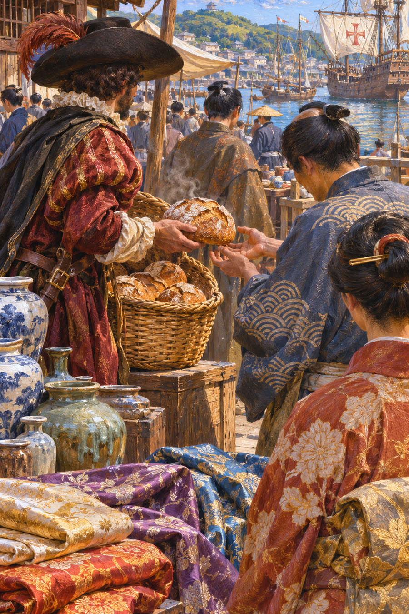
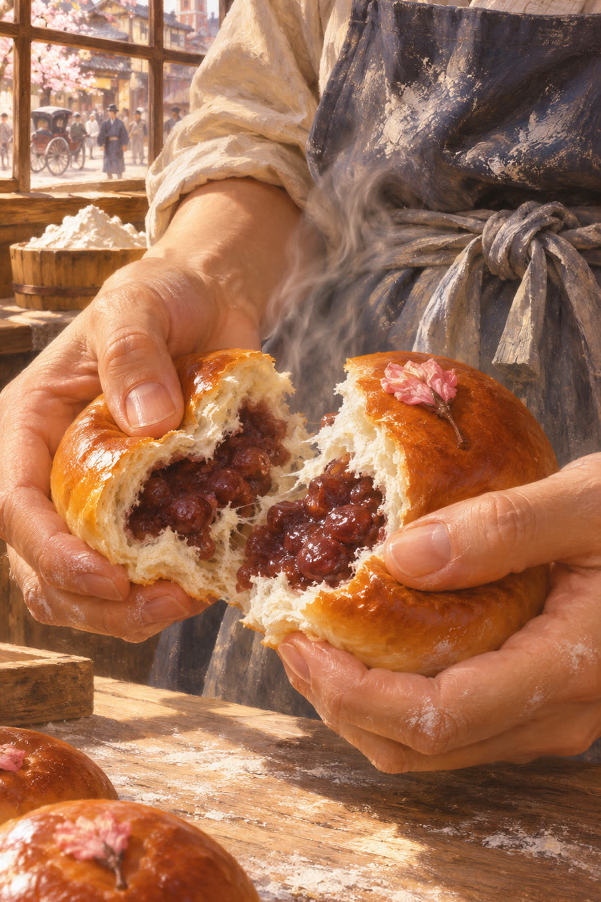
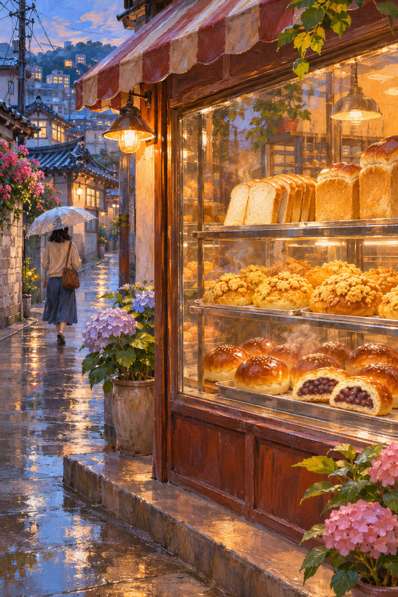

순례자의 한끼한밤
순례자의 한끼한밤우리가 매일 말하는 '빵',
사실 한국말이 아닙니다.
밥, 국, 김치처럼 '빵'도 너무 익숙해서 당연히 우리말인 줄 압니다. 그런데 이 한 글자는 지구 반대편에서 왔습니다. 포르투갈에서는 지금도 빵을 빠웅(pão)이라고 부릅니다. 포르투 골목 빵집에 들어가면 진열장 가득한 둥근 빵을 다들 그렇게 부르죠. 소리가 꽤 닮았습니다.
한 단어가 바다를 건넌 길
배를 타고 건너간 빵
시작은 1543년입니다. 포르투갈 배가 처음 일본 남쪽 바다에 닿았고, 그 뒤로 포르투갈 상인과 선교사들이 꾸준히 일본을 오갔습니다. 배에는 총이나 유리 같은 물건만 실려 있지 않았어요. 빵도 같이 실려 왔다고 전해집니다.
포르투갈 배가 처음 일본에 닿은 해.
빵도 이때 같이 배를 탔습니다.
일본 사람들은 낯선 말 '빠웅'을 자기들 발음으로 '팡(パン)'이라고 불렀습니다. 나가사키 같은 항구에서는 포르투갈 상인들이 건네는 둥근 빵을 처음 맛보는 사람들이 있었겠죠.

빵은 사라져도 말은 남았다
17세기 초, 일본에서 크리스트교가 금지됩니다. 포르투갈 사람들과 함께 들어온 문화도 대부분 밀려났고, 빵도 거의 자취를 감췄습니다. 그런데 신기한 일이 하나 있었어요.
크리스트교가 금지된 뒤
음식은 사라졌는데 이름은 살아남은 겁니다. 그리고 시간이 한참 흘러 1874년, 도쿄의 한 빵집이 빵 속에 팥소를 넣었습니다. 서양 빵에 동양의 팥을 더한 이 빵이 단팥빵의 시작으로 알려져 있어요.

그리고 우리 동네 빵집
이 말이 한국에 건너온 건 구한말에서 일제강점기 사이로 봅니다. 몇 년이라고 딱 잘라 말할 기록은 없지만, 일본어 '팡'을 거쳐 우리말 '빵'이 됐다는 데에는 여러 자료가 같은 이야기를 합니다.

그러니까 동네 빵집 단팥빵 하나에는 포르투갈의 말, 일본의 팥빵, 한국의 이름이 다 들어 있는 셈입니다.
한눈에 보는 '빵'의 길
- 1543
포르투갈 배가 일본에 닿음. 빵과 '빠웅'이라는 말이 함께 건너감
- 16세기
일본 사람들이 '팡(パン)'이라고 부르기 시작
- 17세기 초
크리스트교 금지, 빵은 거의 사라지고 말만 남음
- 1874
도쿄의 한 빵집에서 단팥빵이 태어남
- 구한말~
'팡'이 한국에 건너와 '빵'이 됨
그래서 우리는 오늘도,
포르투갈 말로 빵을 삽니다.
🇬🇧 For pilgrims passing by
The Korean word for bread, "ppang", is not originally Korean. It comes from the Portuguese "pão". Portuguese ships reached Japan in 1543, and the Japanese called their bread "pan". When Christianity was banned in the early 1600s, bread almost disappeared, but the word survived. In 1874 a Tokyo bakery filled bread with sweet red bean paste, and between the late 1800s and the early 1900s the word crossed to Korea and became "ppang".
📚 참고한 자료
- '빵' ← 일본어 パン ← 포르투갈어 pão: 여러 자료가 일치합니다
- 한국에 들어온 정확한 연도는 기록이 없어 '구한말~일제강점기 사이'로 적었습니다
- 한경 생글생글, 주싱가포르 일본대사관 'Bread', Language Log 등
🍽️ 한끼한밤 이야기
🕯️ 오늘 밤 이야기는 여기까지.
다음 이야기는 순례길 800km를 안내하는 노란 화살표입니다.